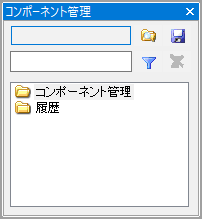
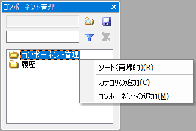
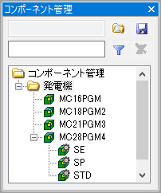
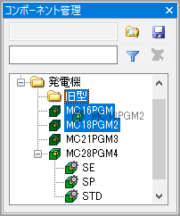
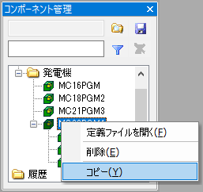
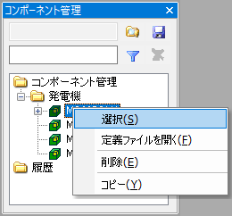
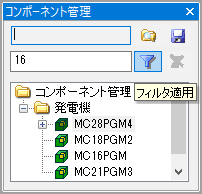
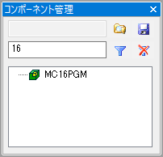
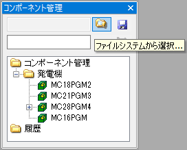
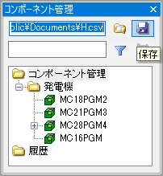

「コンポーネント管理」ウィンドウは、よく使うコンポーネントをあらかじめ登録しておいたり、最近配置したコンポーネントの一覧を記録しておいたりすることができます。ウィンドウに表示されているコンポーネントは、「コンポーネントの配置」コマンドや「配管作成」コマンドでモデルに挿入する際に、毎回ファイル名を指定しなくても簡単に配置できます。また、ウィンドウに表示されているコンポーネント一覧をファイルに保存して、複数の作業者に配布して作業環境を統一することもできます。
メニューバーの「ツール」→「コンポーネント管理」をクリックすると表示されます。
フォルダーアイコンで表示される項目「コンポーネント管理」を選択して、コンテキストメニューを表示してください。
「カテゴリの追加」を選択するとサブフォルダを作成できます。また「コンポーネントを追加」を選択するとファイル選択ダイアログが表示されますので、登録したいコンポーネントの定義を含むモデルファイルを開いてください。フォルダ内にコンポーネントが登録されます。
コンポーネントにコンフィグレーションが設定されていると、ツリーのコンポーネント項目の子項目として表示されます。
登録したコンポーネントは、ドラッグ＆ドロップで別のカテゴリに移動したり、コンテキストメニューの「コピー」「貼り付け」でコピーしたりすることができます。
「コンポーネントの配置」または「配管作成」コマンドの起動中は、コマンドダイアログで定義ファイル名、コンポーネント名およびコンフィグレーション名を選択するかわりに、コンポーネント管理ウィンドウ内のコンポーネントまたはコンフィグレーション項目を選択してコンテキストメニューを表示し、「選択」をクリックすることでもコンポーネントを配置できます。
フィルタ機能を使って表示するコンポーネントを絞り込むことができます。フィルタ文字列を入力してフィルタアイコンをクリックしてください。フィルタ文字列が名前に含まれるコンポーネントのみが列挙されます。
コンポーネントの一覧は、ファイルに保存しておいてあとから読み込むことができます。一覧を保存するにはまず「ファイルシステムから選択...」ボタンをクリックして保存先ファイル名を指定します。
ファイル名が表示されたら、「保存」ボタンをクリックしてください。
「ファイルシステムから選択...」ボタンで表示したファイル選択ダイアログで、新規ファイル名を入力するかわりに既存ファイルを選択すると、現在表示されている登録済みコンポーネントはすべて削除され、コンポーネント一覧が既存ファイルの内容で更新されます。
コンポーネント一覧をいったんファイルに保存したりファイルから読み込んだりすると、その一覧ファイル名はユーザー設定としてアプリケーション終了時に保存され、次回起動時にコンポーネント一覧が自動的に読み込まれます。
コンポーネントを配置すると、ツリー項目の「履歴」フォルダ内にコンポーネントが自動的に追加されます。履歴フォルダ内のコンポーネント数には上限値が設定されています。この値を増減するには、「ツール」→「オプション」をクリックしてオプションダイアログを表示し、「システム」→「ツール」の「コンポーネント管理の履歴数」を変更してください。